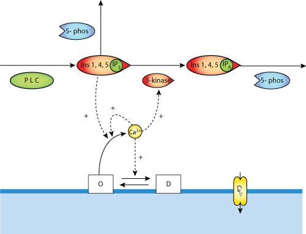

This CellML model runs in OpenCell and COR to reproduce published results. Some traces need to be matched to the SVG diagram.
Inositol 1,4,5-trisphosphate (Ins-1,4,5-P3) is responsible for Ca2+ mobilization in response to external stimulation in many cell types. The latter phenomenon often occurs as repetitive Ca2+ spikes. In this study, the effect of the two Ins-1,4,5-P3 metabolizing enzymes (Ins-1,4,5-P3 3-kinase and 5-phosphatase) on the temporal pattern of Ca2+ oscillations has been investigated. On the basis of the well-documented Ins-1,4,5-P3 3-kinase stimulation by the Ca2+/calmodulin complex and of the experimentally-determined kinetic characteristics of these enzymes, we predict that 5-phosphatase primarily controls the levels of Ins-1,4,5-P3 and, thereby, the occurrence and frequency of Ca2+ oscillations. Consequently, the model reproduces the experimental observation performed in Chinese hamster ovary cells that 5-phosphatase overexpression has a much more pronounced effect on the pattern of Ca2+ oscillations than 3-kinase overexpression. We also investigated, in more detail, under which conditions a similar effect could be observed in other cell types expressing various Ins-1,4,5-P3 3-kinase activities.
The original paper reference is cited below:
'Simulations of the effects of inositol 1,4,5-trisphosphate 3-kinase and 5-phosphatase activities on Ca2+ oscillations.', G Dupont, C Erneux, 1997 Cell Calcium, 22(5), 321-331. PubMed ID: 9448939
|  |
| Schemiatic diagram depicting theDupont Erneux model |